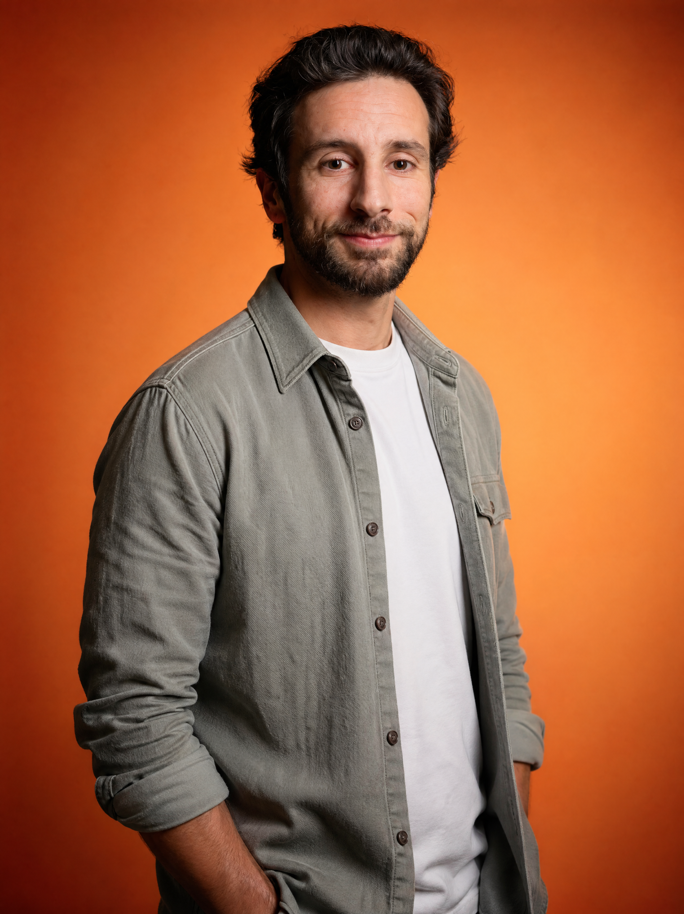
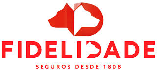
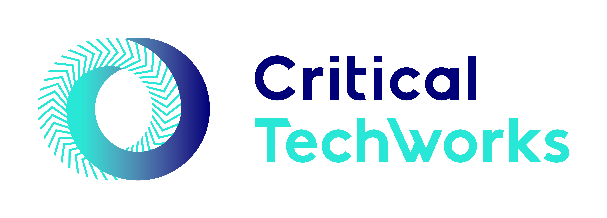
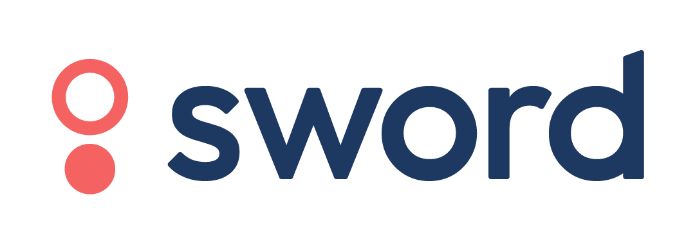
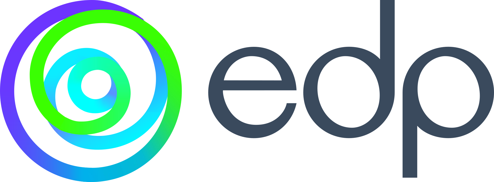
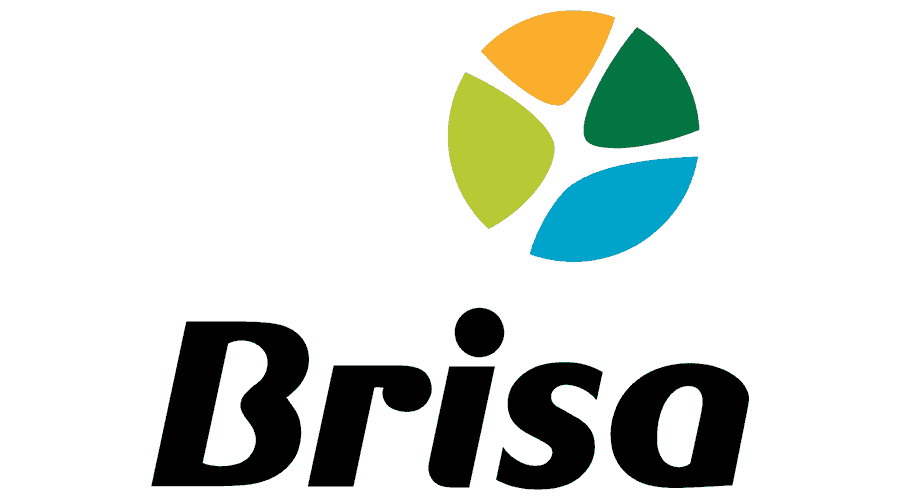

SMB Outbound · Nicho da semana · 04 · 2026
Canalizadores: o nicho que ninguém quer trabalhar 🔧
Briefing interno de nicho. Mercado, ICP, dores, e onde a presença digital faz a diferença. O ponto de partida para a próxima leva de outbound.
Briefing interno de nicho. Mercado, ICP, dores, e onde a presença digital faz a diferença. O ponto de partida para a próxima leva de outbound.
"Eu não tenho tempo para tratar do site. O cliente liga e eu vou."
→ Não é falta de interesse. É falta de tempo e de quem trate disso.
"Quem aparece primeiro no Google ganha. Eu nem aparece nas pesquisas."
→ Visibilidade local é o gargalo. Não é qualidade do trabalho.
"Os clientes vêm por boca-a-boca. Mas o boca-a-boca está a esgotar-se."
→ O canal histórico está em declínio. Faz falta um motor digital novo.
📈 Maioria sole-prop ou empresa familiar · 💰 Receita típica €30k–€150k/ano
O nicho é profundo mas fragmentado. Pouca consolidação, baixa maturidade digital, e procura crescente por urgências (24h) que premeia quem aparece primeiro no Google.
Não falamos com toda a gente. Filtramos por dois padrões claros que indicam encaixe e maturidade para o que entregamos.
Fontes: estimativas internas e padrão observado em outras pesquisas SMB locais. Validar com entrevistas + scrape Google Maps antes de comprometer outbound.
Ajudo PMEs, pequenos negócios e profissionais independentes a atingir os resultados de negócio que pretendem.

Faço-o através de ferramentas e conhecimentos em marketing digital, SEO, vendas, gestão de projeto, web design, UI/UX, fotografia e produção de vídeo. Conhecimentos adquiridos ao longo de trabalho com mais de 20 clientes, nacionais e internacionais, incluindo marcas de referência.
Desenvolvi trabalho variado para todos eles. Hoje estou ao dispor do mercado de pequenos e médios empresários em Portugal, pronto a aplicar este conhecimento ao serviço de quem mais precisa.





Este briefing é uma hipótese, não conclusão. Antes de comprometer uma semana de outbound, há três validações que custam pouco e mudam tudo.